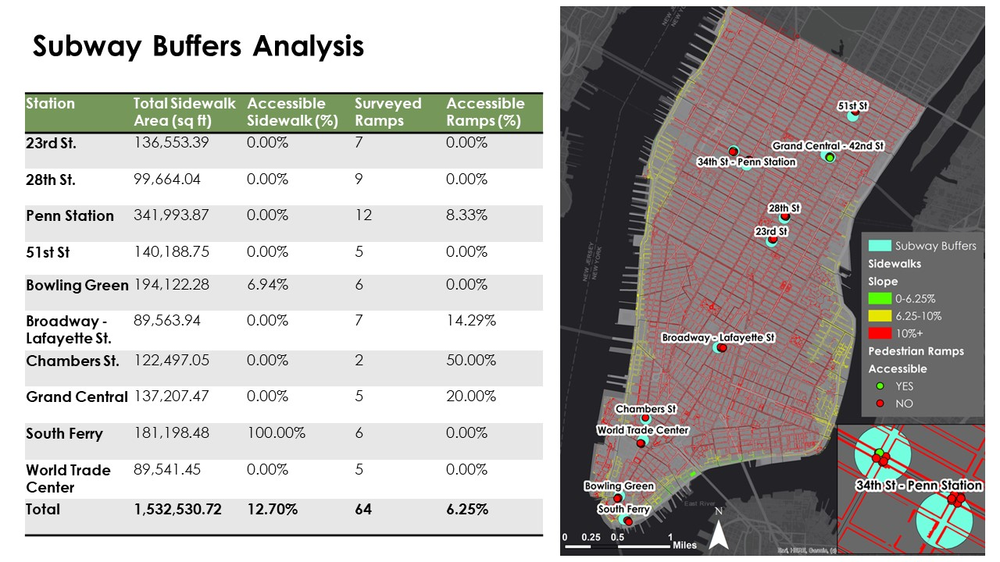
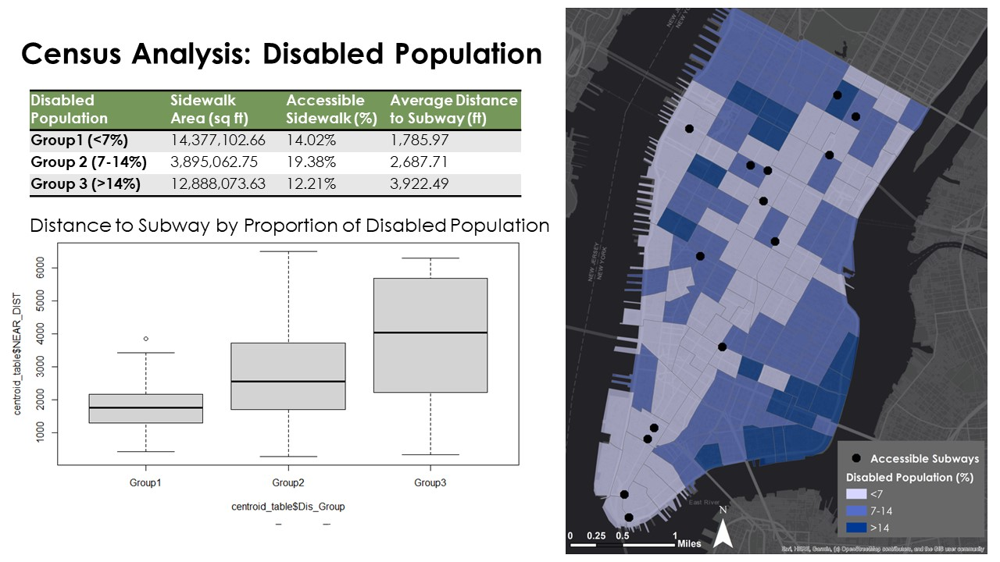
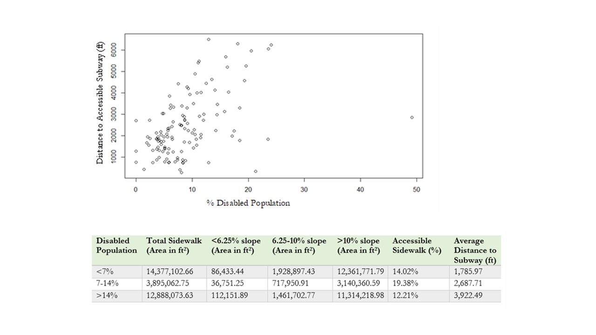
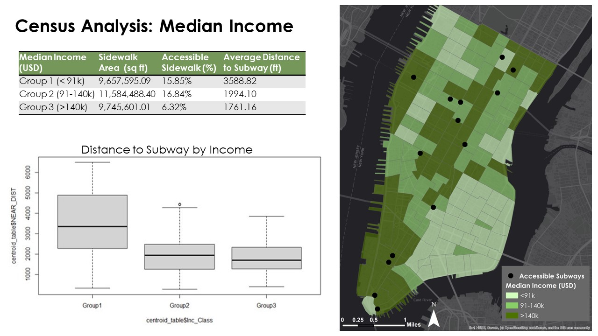
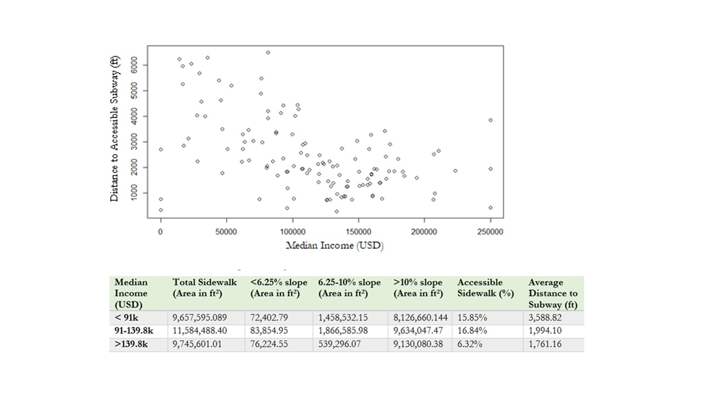

Assessing Disability Accessible Pedestrian Infrastructure in Manhattan
Lester Carver, Yao-Ting Yao, Ben Gowdy-Chase
Spatial Database Project
With over 1-billion people with disabilities across the globe, issues of accessibility are prevalent and important to study. Accessibility for persons with disabilities is a civil and human right recognized under the UN (Convention on the Rights of Persons with Disabilities) and the US Americans with Disabilities Act (ADA).
This project explored the accessibility of pedestrian infrastructure for wheelchair users around ADA-compliant subway stations in New York City. New York City was selected given its importance as the country’s most populated and most visited city, in addition to it having the largest population of people with mobility-related disabilities.
Sidewalk Slope and Pedestrain Ramp in Subway Buffers
For the subway buffers analysis, 300-foot buffers were established around ten stations selected from the MBPO report. The buffer zones were analyzed for the proportion of accessible sidewalk and pedestrian ramps. Of the combined buffer area, 1.34 million ft2, or 12.70% of sidewalk area had a slope of under 10%. Only 6.94% of its sidewalk area being accessible, while the remaining subway station buffers had no accessible sidewalk area. Of the 64 ramps located in Manhattan audited by the MBPO, only 4 (6.25%) were marked as compliant. This means that the vast majority of ramps included one or more barriers, such as having potholes, insufficient width, or another physical obstacle.

Census Tracts Analysis
This project undertook a critical examination of the distribution of accessible sidewalks and subways to explore if there were inequalities based on the percentage of persons with disabilities and median income in US census tracts. For both demographic analyses, census tracts were separated into 3 groups, and then the proportion of accessible sidewalk area and average distance to an accessible subway were calculated for each group of census tracts.


Figures show the positive association found between the proportion of disabled populations and distance to the closest accessible metro. The average distance to an accessible subway for census tracts with the highest percentage of persons with disabilities was 3,922.49 ft (0.74 miles), which was 2.19 times greater than the average distance of 1,785.97 ft (0.34 miles) for census tracts with the lowest percentage of persons with disabilities.


Conclusion
Overall, the findings from the analysis of both questions reveal concerning patterns of inaccessibility across Manhattan's pedestrian infrastructure. Looking at the subway buffers analysis, only four of the ten selected stations had even a single accessible pedestrian ramp of those surveyed, and only two stations had sidewalks with an accessible slope. Important transportation hubs like Pennsylvania Station and Grand Central have no accessible sidewalks and a low proportion of accessible ramps. That means the mobility for people with disabilities to travel outside the city through public transportation is restricted. South Ferry, an important tourist and commuter station connecting the rest of New York City to Staten Island, has 100% accessible sidewalk grades but no corresponding ramp accessibility.
An interesting correlation is that the highest need census tracts (low-income or high disability) are close to double the distance to the nearest accessible metro in each case. The high-income communities appear best served in proximity to accessible stations. Our findings are similar with those of similar studies, such as a 2017 study which used census track and distance analysis to subways whole of New York City, which found that higher income, suburban areas were better served by accessible stations. Our further finding is that this inequality of accessibility of stations exists not only between suburban and urban communities, but also within the urban area between its compositions of high-income and low-income communities.